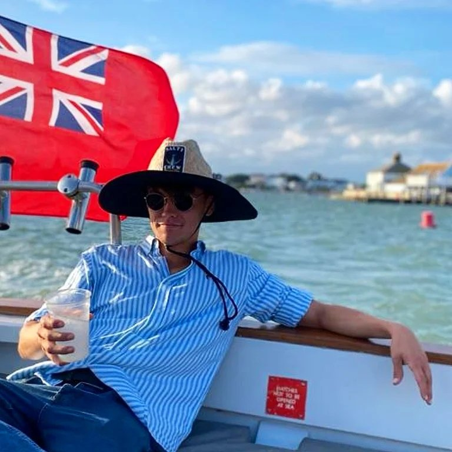

Benjmain D Goode

Web Developer
Summary
I have had a keen interest in computers and their inner workings for a number of years now. I studied computer science at A level and went on to work on a google shopping project under HCL Technologies for 2 years when I lived in Poland - I am now training to become a full stack web developer in my spare time in order to pursue a career in coding.
Education
A Levels - Bournemouth School
- Computer Science - B
- Business Studies - C
- Economics - B
- Drama - A
GCSEs - St Peter's School
- 1 x A*
- 6 x A
- 4 x B
- 3 x C
Work Experience
HCL Technologies - Google Shopping Project
June 2020 - November 2022
Responsibilities Included;
- Checking data structures of both brands and product lines within google shopping to ensure all data is organised correctly.
- Building my own data structures for new Brands/ Products/ Product lines.
- Backing up any changes I've made to data with screenshots annotated with reasoning for the change made.
Index Marine Equipment - Website building
January 2020 - May 2020
Responsibilities Included;
- Collecting product images and product descriptions from suppliers of over 3000 products stocked.
- Copying content from old website e.g. About Us, Contact Us etc. pages and reformatting to make look more professional
- Liasing with graphic designers to ensure a smooth flow to website
Skills
My skills include
- Logical thinking - coding works well for me because it's how my brain works
- Attention to detail - call it OCD but I always feel the need to triple check everything
- Quick Learning - I've been doing this course for a day or two and I can make my own resume in HTML!
Other Info